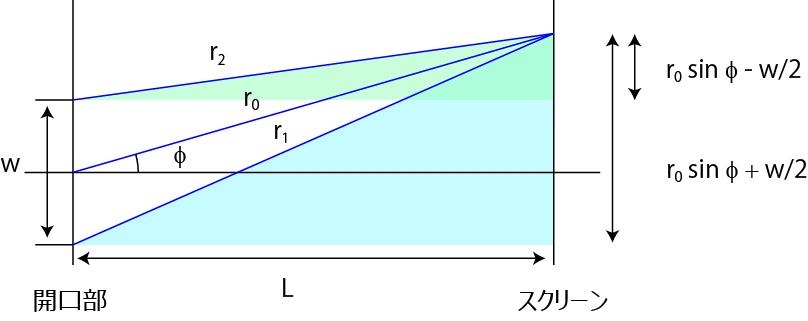

像分布関数 (PSF , Point spread function) について-03
では，ｒ2-ｒ1，を計算してみましょう．

この色をつけた二つの三角形から，ｒ2-ｒ1，が求まります．
\( \Large r_2^2 = \left( r_0 \ cos \phi \right)^2 + \left( r_0 \ sin \phi -\frac{w}{2} \right)^2 \)
\( \Large r_1^2 = \left( r_0 \ cos \phi \right)^2 + \left( r_0 \ sin \phi +\frac{w}{2} \right)^2 \)
\( \Large \begin{eqnarray} r_2 &=& \sqrt{r_0^2 \cdot cos^2 \phi + r_0^2 \cdot sin^2 \phi -w \cdot r_0 \cdot sin \phi + \frac{w^2}{4}} \\
&=&
\sqrt{r_0^2 -w \cdot r_0 \cdot sin \phi + \frac{w^2}{4}} \\
\end{eqnarray} \)
\( \Large \begin{eqnarray} r_1 &=& \sqrt{r_0^2 \cdot cos^2 \phi + r_0^2 \cdot sin^2 \phi +w \cdot r_0 \cdot sin \phi + \frac{w^2}{4}} \\
&=&
\sqrt{r_0^2 +w \cdot r_0 \cdot sin \phi + \frac{w^2}{4}} \\
\end{eqnarray} \)
と書き直すことができます．
ここで，r0 >> d，と考えていいので，最後の項を無視することができ，
\( \Large r_2 = \sqrt{r_0^2 -w \cdot r_0 \cdot sin \phi} \)
\( \Large r_1 = \sqrt{r_0^2 +w \cdot r_0 \cdot sin \phi} \)
となります．
さて，ここでさらに変換して，
\( \Large \begin{eqnarray} r_2 &=& \sqrt{ \left(r_0^2 -\frac{w}{2} \cdot sin \phi \right)^2 -\frac{w^2}{4} \cdot sin^2 \phi} \\
&=&
r_0^2 -\frac{w}{2} \cdot sin \phi \\
\end{eqnarray} \)
\( \Large \begin{eqnarray} r_1 &=& \sqrt{ \left(r_0^2 +\frac{w}{2} \cdot sin \phi \right)^2 -\frac{w^2}{4} \cdot sin^2 \phi} \\
&=&
r_0^2 +\frac{w}{2} \cdot sin \phi \\
\end{eqnarray} \)
\( \Large r_1 = \sqrt{ \left(r_0^2 +\frac{w}{2} \cdot sin \phi \right) -\frac{w^2}{4} \cdot sin^2 \phi} \)
となります．ここでもまた最後の項を無視しました．
従って，
\( \Large sin \phi = \frac{2 \pi n}{k w} = \frac{\lambda}{w} n \)
と簡単にすることができます．
さて，次に，これがどう結像面での大きさになるかを計算してみましょう．
一つ気になることがあるのですが，本筋から外れるのでここに．